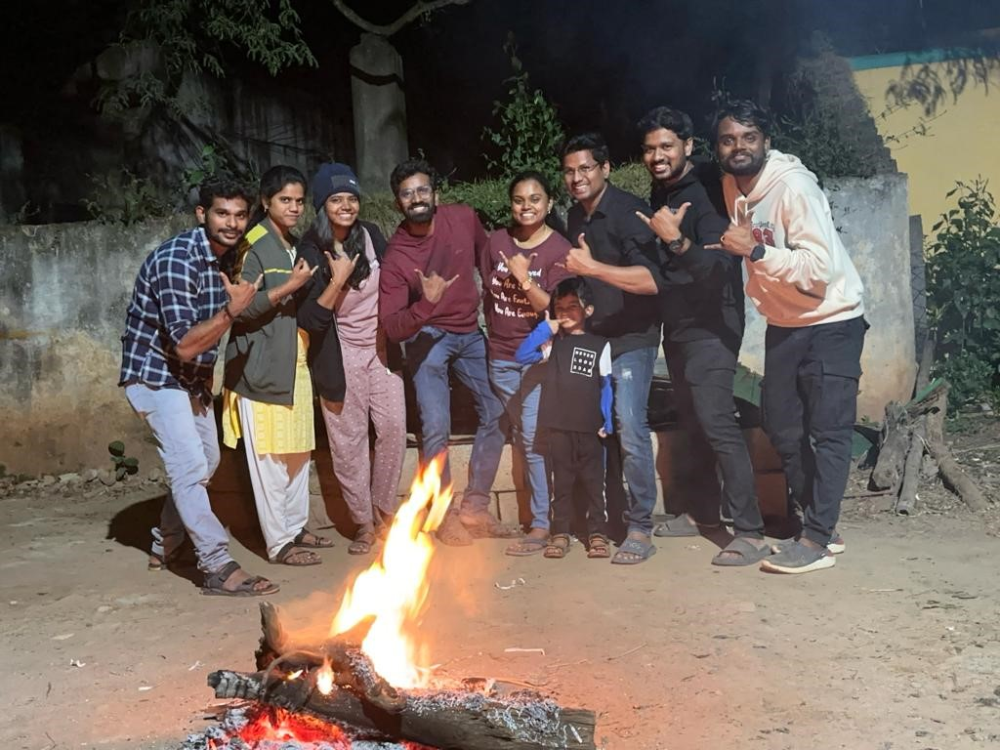

<!-- <!DOCTYPE html>
<html>
<head>
  <meta charset="utf-8">
  <title>SnapStickStudio Memories</title>

  <style>
    body {
      margin: 0;
      overflow: hidden;
      background: black;
    }

    #camera {
      position: fixed;
      top: 0;
      left: 0;
      width: 100vw;
      height: 100vh;
      object-fit: cover;
      z-index: 1;
    }

    #photo {
      position: fixed;
      bottom: 20px;
      left: 50%;
      transform: translateX(-50%);
      width: 80%;
      max-width: 350px;
      z-index: 2;
      border-radius: 12px;
      box-shadow: 0 0 20px rgba(0,0,0,0.5);
    }

    #video {
      position: fixed;
      top: 50%;
      left: 50%;
      transform: translate(-50%, -50%);
      width: 80%;
      max-width: 350px;
      z-index: 3;
      border-radius: 12px;
      display: none;
    }

    #btn {
      position: fixed;
      bottom: 90px;
      left: 50%;
      transform: translateX(-50%);
      z-index: 4;
      padding: 12px 20px;
      background: #000;
      color: #fff;
      border-radius: 25px;
      font-size: 16px;
      border: none;
    }
  </style>
</head>

<body>

<video id="camera" autoplay playsinline muted></video>



<video id="video" src="video.mp4" controls playsinline></video>

<button id="btn">▶ Play Memory</button>

<script>
  // Camera
  navigator.mediaDevices.getUserMedia({ video: { facingMode: "environment" } })
    .then(stream => {
      document.getElementById("camera").srcObject = stream;
    })
    .catch(err => alert("Camera error: " + err));

  // Play button
  document.getElementById("btn").onclick = () => {
    const v = document.getElementById("video");
    v.style.display = "block";
    v.play();
  };
</script>

</body>
</html> -->


<!DOCTYPE html>
<html>
<head>
  <meta charset="utf-8" />
  <title>SnapStickStudio AR</title>

  <script src="https://aframe.io/releases/1.4.2/aframe.min.js"></script>
  <script src="https://cdn.jsdelivr.net/npm/mind-ar@1.2.5/dist/mindar-image-aframe.prod.js"></script>

  <style>
    body { margin: 0; overflow: hidden; }
  </style>
</head>

<body>
  <a-scene
    mindar-image="imageTargetSrc: targets.mind;"
    vr-mode-ui="enabled: false"
    device-orientation-permission-ui="enabled: true"
    embedded
  >

    <a-assets>
      <video
        id="vid"
        src="video.mp4"
        loop
        muted
        playsinline
        crossorigin="anonymous"
      ></video>
    </a-assets>

    <a-camera position="0 0 0" look-controls="enabled: false"></a-camera>

    <!-- <a-entity mindar-image-target="targetIndex: 0">
      <a-video
  src="#vid"
  width="1"
  height="0.75"
  position="0 0 0.01"
  rotation="0 0 0">
</a-video>

    </a-entity> -->
    <a-entity
  mindar-image-target="targetIndex: 0"
  id="target"
>
  <a-video
    src="#vid"
    width="1"
    height="0.75"
    position="0 0 0.01">
  </a-video>
</a-entity>


  </a-scene>

  <script>
    // const video = document.querySelector("#vid");
    // document.body.addEventListener("click", () => {
    //   video.play();
    // });

    const target = document.querySelector("#target");
  const video = document.querySelector("#vid");

  target.addEventListener("targetFound", () => {
    console.log("IMAGE FOUND");
    video.play();
  });

  target.addEventListener("targetLost", () => {
    console.log("IMAGE LOST");
    video.pause();
  });
  </script>

</body>
</html>
